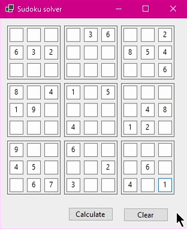

Sudoku oplosser
Je voert de gegeven nummers van de sudoku in en je klikt op 'Calculate'.
Er wordt een 9x9 rooster gemaakt om een Sudoku-puzzel voor te stellen.
Het initialisatieproces vult de puzzel met standaardwaarden (in dit geval 0 voor lege vakjes).
Er zijn functies om het rooster te tonen, leeg te maken en te controleren of een geplaatst nummer geldig is.
Een functie probeert de Sudoku-puzzel op te lossen door een backtracking-algoritme [1] te gebruiken.
Een andere knop wist alle ingevulde waarden om het rooster leeg te maken.
Deze applicatie is met WinForms en C# gemaakt.